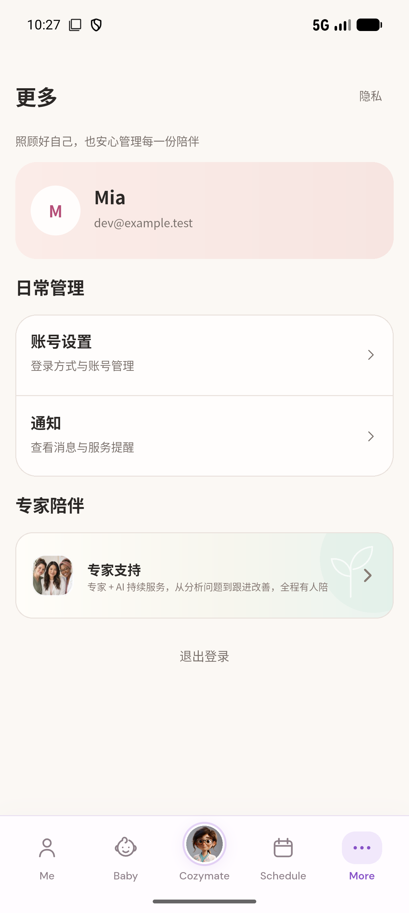

More：尚未完全对齐
2026-09-15 · 当前 Figma 与当前 Flutter 代码 · 393×844 · 普通字号 · 图片已解码。安卓实机截图单独列出，不与设计图强行缩放对比。
默认状态
账号卡片下移 7 px；日常管理与专家模块下移 9 px；导航 74 → 78 px，头像 36 → 42 px。
加载状态
使用同样的零未读数据；Figma 退出文字置灰，App 仍可退出。真实路由加载加 3 条未读见下方。
退出失败终点
退出失败文案一致，但提示条与登录表单的布局、字形、细节不同。
其它已复现状态
这些截图用于核对运行行为；不能替代缺失的独立 Figma 状态设计。
当前 Android App
1280×2856，DPR 3，包含系统安全区；示例身份差异不记为设计问题。
